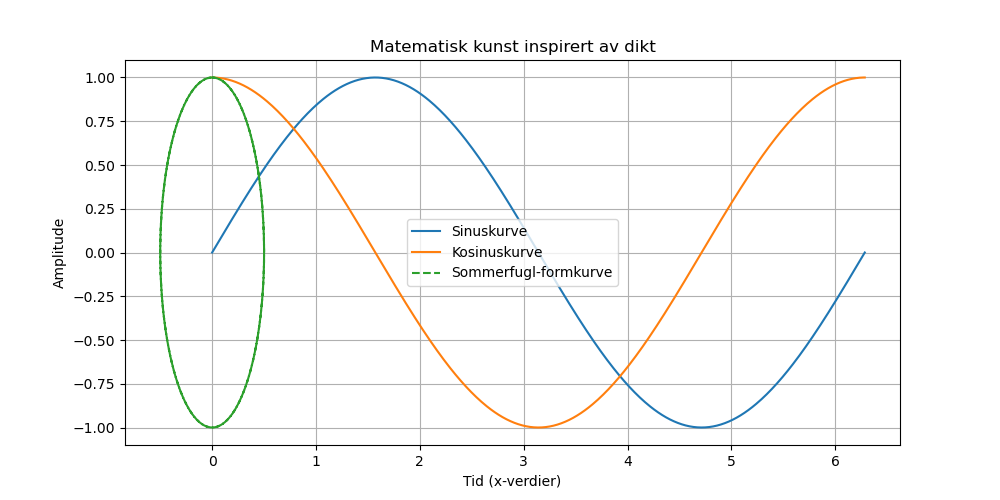

Dagens dikt
Under stjernehimlenes skjold,
En dans av tall, både ung og gammel.
Sirkler snor seg rundt sin akse,
Visdom i bølgens vakre praksis.
Fra hjertet av kaos utspres lys,
Sinus og kosinus følger sin mystiske riss.
Som sommerfugler — parvis fly derhen,
Kurvene kysser — nydelig igjen og igjen.
Hvordan kan matematisk rytme fremstå?
La Python vise, og grafene få gå!
---

Kode
import numpy as np
import matplotlib.pyplot as plt
# Matematiske representasjoner av diktet:
# Sinuskurven og kosinuskurven som "danser parvis"
x = np.linspace(0, 2 * np.pi, 500) # Variabel som representerer tid/akse
sin_curve = np.sin(x)
cos_curve = np.cos(x)
# Kombinere sinus og kosinus for å skape en "sommerfugl-lignende" effekt
butterfly_x = np.sin(x) * np.cos(x)
butterfly_y = np.cos(x) ** 2 - np.sin(x) ** 2
# Plotte diktets matematiske "visdom"
plt.figure(figsize=(10, 5))
# Plot sinus og kosinus som de "danser parvis"
plt.plot(x, sin_curve, label="Sinuskurve")
plt.plot(x, cos_curve, label="Kosinuskurve")
# Plot sommerfugl-lignende kurve
plt.plot(butterfly_x, butterfly_y, label="Sommerfugl-formkurve", linestyle='dashed')
# Legge til dekorative elementer basert på diktets innhold
plt.title("Matematisk kunst inspirert av dikt")
plt.xlabel("Tid (x-verdier)")
plt.ylabel("Amplitude")
plt.legend()
plt.grid(True)
plt.savefig('2025-03-20-20-01-20.png')